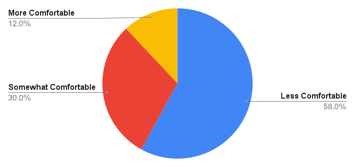
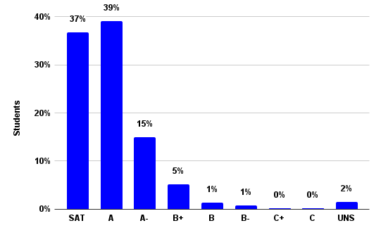
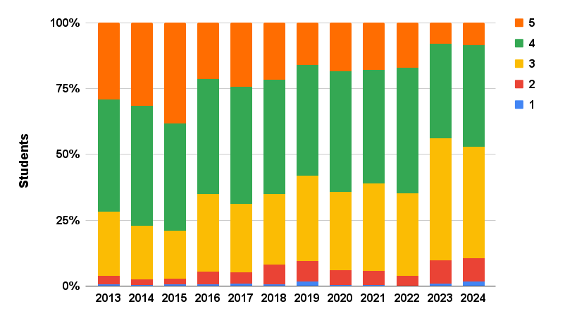
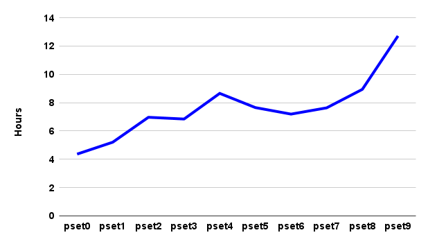

常见问题
电子邮件 heads@cs50.harvard.edu with any other 问题!
- Advice
- Auditing
- College Requirements
- Comfort
- Cross-Registering
- COVID-19
- Curriculum
- First Years
-
Grades
- How can I change from SAT/UNS to letter grade?
- How can I check the status of my Grading Basis Change Request?
- Should I take CS50 SAT/UNS or for a letter grade?
- What is CS50’s grade distribution?
- Which concentrations offer concentration credit for CS50?
- Which concentrations require a letter grade in order for CS50 to count for concentration credit?
- Laptops
- 讲座
- Prior Experience
- 问题集
- 小组课
- Semesters
- Simultaneous Enrollment
- Support
- Workload
Advice
How should I structure my 周?
Most 周次 follow the pattern below.
| 星期一 | 讲座 | |
| 星期二 | 小组课 | |
| 星期三 | 小组课, 答疑时间 | |
| 星期四 | 答疑时间 | |
| 星期五 | 答疑时间 | |
| 星期六 | 答疑时间 | |
| 星期日 | 答疑时间 | 问题集 |
Accordingly, plan to
- attend 讲座 on Mondays (or 观看 recordings thereof if simultaneously enrolled in another 课程),
- attend 小组课 on Tuesdays or Wednesdays,
- optionally attend 答疑时间 on Wednesdays, Thursdays, Fridays, Saturdays, and/or Sundays, and
- 提交 问题集 by Sundays.
Auditing
Can I audit CS50?
Yes, if by audit you mean attend or 观看 the 课程 讲座 and/or complete the 课程’s 问题集.
If, though, you would like to attend 小组课 and 答疑时间, and/or 提交 问题集 for feedback, you should register or cross-register instead.
College Requirements
Does CS50 satisfy any College requirements?
Yes. You 五月 take CS50 to fulfill Science and Engineering and Applied Science distribution requirement or the Quantitative Reasoning with Data (QRD) requirement, but not both.
- To satisfy Science and Engineering and Applied Science distribution requirement, you 五月 take CS50 SAT/UNSAT or for LG.
- To satisfy the Quantitative Reasoning with Data (QRD) requirement, you 五月 take CS50 for LG only.
Comfort
Will everyone else know 更多 than me? 较少 than me?
Not at all! Approximately two thirds of CS50 students have never taken a CS 课程 before. Moreover, in 秋季 2024, 58% of students described themselves as among those 较少 comfortable, while 12% described themselves as 更多 comfortable, and 30% described themselves as somewhere in between. No matter your own comfort level, then, you’ll be in good company!

Cross-Registering
Can I cross-register for CS50?
Yes, if you are a student at MIT or in any of Harvard’s graduate schools, you 五月 cross-register.
COVID-19
What should I do if I show symptoms of or test positive?
Don’t attend 讲座, 小组课, 答疑时间, or any other activities in person. Just let us know at heads@cs50.harvard.edu, CCing your resident dean. We’ll arrange for you to keep up online.
What should I do if I need to isolate or quarantine?
Not to worry, let us know at heads@cs50.harvard.edu, CCing your resident dean. We’ll arrange for you to keep up online.
Curriculum
Which languages will I learn?
Rather than teach just one language, CS50 introduces students to a range of “procedural” 编程 languages, each of which builds conceptually atop another, among them Scratch, C, Python, SQL, and JavaScript. Along the way does the 课程 also introduce students to HTML and CSS (which are languages but not 编程 languages). The goal, ultimately, is for students to feel not that they “learned how to program in X” but that they “learned how to program.”
Why does CS50 use C?
See this 答案 on Quora!
First Years
Can first years take both CS50 and a Freshman Seminar SAT/UNS?
Yes. Even though first years 五月 not ordinarily enroll in both a Freshman Seminar and another non-letter-graded 课程 in any one term, they 五月 take both CS50 and a Freshman Seminar SAT/UNS.
Should first years take CS50?
Yes, if they would like! In 秋季 2024, first years composed a 多数制 of CS50’s student body. While students should be mindful of CS50’s workload and should perhaps avoid taking 4 pset-based classes, students shouldn’t shy away (from CS50 or any other introductory 课程) simply because they’re first years.
Grades
How can I change from SAT/UNS to letter grade?
If you are a College student, 提交 a Grading Basis Change Request form no later than 2025-11-17T23:59:00-05:00, the term’s eleventh “星期一”.
If you are a grad student, 电子邮件 enrollment@fas.harvard.edu no later than 2025-11-17T23:59:00-05:00, the term’s eleventh “星期一”, and FAS’s Registrar will make the change for you.
If you are a cross-registered student, 电子邮件 your 首页 registrar no later than 2025-11-17T23:59:00-05:00, the term’s eleventh “星期一”, and your 首页 registrar should make the change for you.
How can I check the status of my Grading Basis Change Request?
If you are a College student, see step 5 of the Change of Grading Basis Workflow.
Should I take CS50 SAT/UNS or for a letter grade?
If you are a College student, unless your (potential) concentration requires that you take CS50 for a letter grade, you should take CS50 SAT/UNS, which is the default. Here’s why!
If you are a grad student or cross-registered, unless your department or school requires that you take CS50 for a letter grade, you should take CS50 SAT/UNS, which is the default. Here’s why!
What is CS50’s grade distribution?
Per CS50’s 教学大纲, “what ultimately matters in this 课程 is not so much where you end up relative to your classmates but where you, in 周 11, end up relative to yourself in 第 0 周.” Accordingly, provided you put in the 时间 and effort, odds are you’ll fare quite well! In 秋季 2024, 37% of students received a final grade of SAT, 39% of students received a final grade of A, 15% of students received a final grade of A-, 7% of students received a final grade in the B range, and 1% of students received a final grade in the C range, per the below. Cases of E or UNS were typically extenuating circumstances.

Which concentrations offer concentration credit for CS50?
If you are a College student, see this spreadsheet.
Which concentrations require a letter grade in order for CS50 to count for concentration credit?
If you are a College student, see this spreadsheet. 笔记 that you 五月 take CS50 SAT/UNS and concentrate in CS; CS does not require a letter grade.
Laptops
If my laptop isn’t working, can I borrow one?
Yes, SEAS Computing has a (small) number of loaner computers that they can loan out for a couple of 周次 at a 时间. They arent’t replacements, just a way of not falling too far behind while you either get your current machine repaired or procure a new one. 电子邮件 ithelp@harvard.edu to arrange.
讲座
When are 讲座?
讲座 are ordinarily on Mondays, 1:30pm–4:15pm ET, which is a double block, but we’ll occasionally end before 4:15pm ET. And we’ll take one or 更多 breaks during most 讲座.
The 课程’s first 讲座, though, will be 2025-09-03T13:30:00-04:00.
When are recordings of 讲座 available?
讲座 are live-streamed and available on demand the moment a 讲座’s begun, a la a DVR. So if you are simultaneously enrolled in another 课程, you can 观看 them on 视频 anytime after they’ve begun.
Prior Experience
Can I resubmit code I already wrote if I took CS50 AP or CS50x?
If you took part or all of CS50 AP (online or in high school) or CS50x (online), you can resubmit code from 问题集 that you already completed so long as you completed them in a “reasonable” manner, per the 课程’s policy on 学术诚信. If you completed them in an “unreasonable” manner, as by viewing someone else’s solutions at the 时间, you should not review or resubmit your prior work; you should instead re-do those 问题集 from scratch.
If you do resubmit code that you already wrote, be sure it adheres to the current semester’s specifications, which might differ from earlier versions. And be sure to mention via a comment in your code that you previously submitted it.
Does CS50 have any prerequisites?
No, CS50 is indeed designed for concentrators and non-concentrators alike, with or without prior 编程 experience. And two thirds of CS50 students have indeed never taken CS before. Even so, while it is not necessary (or expected!) that you prepare (e.g., over the 夏季) to take CS50, some students find it helpful to do so! If anything, a bit of prep over the 夏季 might help you feel all the 更多 comfortable in the 课程’s first 周次, especially if you’re a first-year, in which case both CS and college might be new to you!
If, then, you would like to prepare over the 夏季, we recommend that you take (for free!) CS50’s Introduction to 编程 with Scratch on edX. (No need to pay for a 证书!) We use Scratch, a graphical 编程 language from MIT’s Media Lab, in CS50’s own first 周 in the 秋季, so spending a bit of 时间 with Scratch over the 夏季 will allow you to hit the ground running. Even though Scratch is designed for younger students, here’s why we use Scratch (for just one 周!) at Harvard and Yale alike!
Should I skip CS50 if I already took AP CS A?
Probably not. Most students who have taken AP CS A still take CS50 as it tends to fill in gaps in their knowledge and also introduces them to C (and 更多!). If you can’t complete the test from 上一页 years quickly and correctly, you shouldn’t skip CS50.
Should I skip CS50 if I already took AP CSP?
Probably not, unless you took CS50 AP. If you can’t complete the test from 2022–2023 academic year quickly and correctly, you shouldn’t skip CS50.
问题集
What’s the difference between “较少 comfortable” and “更多 comfortable” problems? Do I have to do both?
In some earlier 问题集, you’ll have a choice between a “较少 comfortable” and a “更多 comfortable” problem.
The “较少 comfortable” are what you might consider the “standard” version of the problem, designed for students who have little or no prior experience. The “更多 comfortable” are the “challenge” version, designed for students who consider themselves 更多 comfortable due to prior study/experience before this class. As such, they 五月 require 更多 concepts than have been covered in the 课程 so far.
You don’t get any extra points for doing the “更多 comfortable” problems. If you 提交 both, we will consider the one with the highest score. For reference, in 秋季 2024, 10–30% of students submitted the “更多 comfortable” problems.
小组课
Is attendance at 小组课 expected?
Yes, as 小组课 are meant to be a 更多 intimate, interactive opportunity to review the 周’s material.
Semesters
When is CS50 offered?
CS50 is offered primarily in 秋季 term. All students, including concentrators and non-concentrators, should take CS50 in 秋季 term. However, SEAS concentrators and secondaries unable to take the 课程 in 秋季 term 五月 alternatively take a (smaller-scale) version of CS50 in the 春季 or 夏季.
Because of 夏季 term’s shorter length, the 夏季 version of CS50 is the most intensive.
How do 秋季, 春季, and 夏季 terms differ?
The 秋季 version of CS50 is for everyone, including concentrators and non-concentrators as well as cross-registrants.
The 春季 and 夏季 versions of CS50 are for students who are unable to take the 课程 in 秋季 term.
Because of 夏季 term’s shorter length, the 夏季 version of CS50 is the most intensive.
| 秋季 | 春季 | 夏季 | |
|---|---|---|---|
| CS50 Fair | ✓ | ||
| CS50 Hackathon | ✓ | ||
| CS50 Lunches | ✓ | ||
| CS50 Puzzle Day | ✓ | ||
| Enrollment | Unlimited | Limited | Limited |
| 最终项目 | ✓ | ✓ | ✓ |
| Grading Basis | SAT/UNS or letter | SAT/UNS or letter | SAT/UNS or letter |
| 讲座 | Live | 视频 | 视频 |
| 小组课 per 周 | 1 | 1 | 2 |
| 答疑时间 | ✓ | ✓ | ✓ |
| 问题集 | ✓ | ✓ | ✓ |
| Simultaneous Enrollment | ✓ | ✓ | ✓ |
Simultaneous Enrollment
Can I simultaneously enroll in CS50 and another 课程 that meets at the same or overlapping 时间?
Yes, you 五月 simultaneously enroll in CS50 and another 课程 that meets at the same 时间, watching CS50’s 讲座 anytime online and attending the other 课程 in person, so long as you can regularly attend 小组课. Per the Office of Undergraduate Education, CS50 has been “granted a waiver from the Administrative Board petition process by a subcommittee of the Standing Committee on Undergraduate Educational Policy (EPC).”
- 秋季 Term
- To enroll simultaneously in CS50 and another 课程, you do not need anyone’s permission or signature, and you do not need to petition the Administrative Board. But be sure to 提交 cs50.ly/simultaneous.
- 春季 Term
- To enroll simultaneously in CS50 and another 课程, you do not need anyone’s signature, and you do not need to petition the Administrative Board. But be sure to 电子邮件 heads@cs50.harvard.edu for permission.
Can I 观看 CS50’s 讲座 online if they conflict with some other academic or athletic commitment?
Yes, but be sure to 提交 cs50.ly/simultaneous.
Support
How much academic support does CS50 provide?
Quite a lot! In addition to 讲座, and 小组课, CS50 also offers around 25 工作人员-hours of 答疑时间 per 周.
Workload
How difficult is CS50?
For many students, CS50 is simply 更多 时间-consuming than it is difficult. Starting each 周’s 问题集 early, then, makes things easier! And the 课程’s difficulty was also recalibrated 返回 in 2016, per the Q data below.

How much work is CS50?

By mid-semester, most students spend 8+ hours per 周 on the 课程’s 问题集, but it definitely varies by 问题集, per the below, and student.
